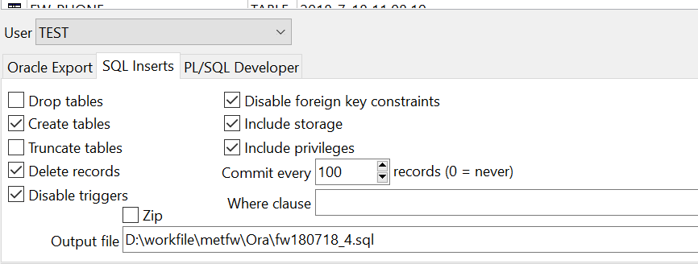

何为良好生活？陈嘉映说「行之于途而应于心」；路遥也曾说过「只有在无比沉重的劳动中,人才会活得更为充实」。在这个价值流失的年代如何自处，我想很简单，撸起袖子加油干，做好眼前事就行了，在做事行路的过程中自然就会找寻到意义，意义不是空想出来的，而是在实践中产生的。
这篇文章简单记录 Oracle 导出表结构表数据的关键点，使用常用的 plsql 工具。
Export Tables 的三种导出方式
使用 plsql 工具导出表结构表数据其实很简单方便，打开 plsql 工具，选择 Tools 菜单栏下面的 Expor Tables 即可。点开你会发现如下界面：

第一种 Oracle Export 是导出为 .dmp 的文件格式，.dmp文件是二进制的，可以跨平台，还能包含权限，效率也很不错，用得最广 。
第二种 SQL Insert 是导出为.sql文件的，可用文本编辑器查看，通用性比较好，但效率不如第一种，适合小数据量导入导出。尤其注意的是表中不能有大字段（blob,clob,long），如果有，会提示不能导出(提示如下： table contains one or more LONG columns cannot export in sql format,user Pl/sql developer format instead)。
第三种是导出为.pde格式的，.pde为Pl/sql developer自有的文件格式，只能用Pl/sql developer自己导入导出，不能用编辑器查看。
需要注意的是： 就算你选择第一种 Oracle Export 方式导出为 .sql 文件，也是可以的，但是最终导出的 sql 文件打开会有乱码，我一开始并不清楚这三种导出方式的区别，使用第一种方式导出为 .sql 文件一直是乱码，浪费了不少时间。
导出的 SQL 文件中文乱码
关于导出乱码的问题，网上有很多教程，但都是抄来抄去也写的不清晰，这里基于自己实际解决乱码问题的经验简单记录下：
问题的关键就在于 server、client 端的编码要一致， 将 client 端的编码方式修改为和 server 端一致即可。
Oracle 字符集：
ORACLE的字符集名字由三部分组成：NLS_LANG=\
比如常见的 nls_lang=AMERICAN_AMERICA.UTF8 ； nls_lang=SIMPLIFIED CHINESE_AMERICA.UTF8
查看 Server 字符集环境：
1 | SELECT * FROM NLS_DATABASE_PARAMETERS; |
数据库可用字符集参数设置：
SELECT * FROM V$NLS_VALID_VALUES
注意：SELECT * FROM NLS_INSTANCE_PARAMETERS 是表示实例的字符集环境，而不是客户端。
查看 Client 字符集环境：
SELECT USERENV('language') FROM DUAL;
修改 Client 字符集：
我使用的开发环境是 Windows，所以只写在 Windows 下的操作方法：修改注册表键值永久设置，HKEY_LOCAL_MACHINE/SOFTWARE/ORACLE/KEY_XXXX_home1/NLS_LANG，将值修改为 AMERICAN_AMERICA.AL32UTF8 后导出的 sql 文件编码正确，显示正常。